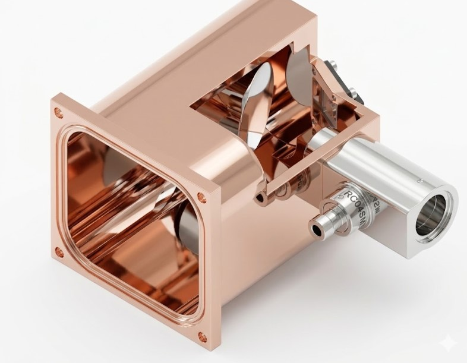

Mechanical Engineer | Dark Matter Research | Quantum Information
View My WorkStaff Mechanical Engineer at SLAC National Accelerator Laboratory. I design and build infrastructure for Dark Matter searches and Quantum Information advancements.

The CCS steers a focused beam across the surface of a superconducting device, to enable measurement of position-dependent device response to a controlled deposit of energy.